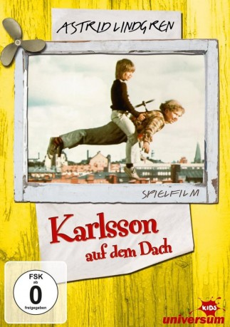

#11249 Karlsson auf dem Dach
 
 IMDB-Wertung: 5.7 / 10
IMDB-Wertung: 5.7 / 10  Metascore: 0
Metascore: 0 
Lillebror ist der Jüngste einer ganz normalen Familie, die in Stockholm lebt. Nach der Schule ist der achtjährige Junge meistens alleine zu Hause – seine Eltern arbeiten und die beiden älteren Geschwister gehen bereits ihrer eigenen Wege. Lillebror wünscht sich nichts sehnlicher als einen eigenen Hund. Doch die Eltern sind dagegen. Eines Nachmittags taucht plötzlich Karlsson in Lillebrors Leben auf – “der Welt bester Herr Karlsson, ein Mann in den allerbesten Jahren, der in dem weltbesten Haus am Dach” lebt. Herr Karlsson ist klein und dick, hat fast eine Glatze, ist ziemlich arrogant, liebt Bonbons über alles und hat vor allem einen Propeller auf dem Rücken, mit dem er fliegen kann. Lillebror ist begeistert, auch wenn sein neuer Freund so manchen Unfug treibt und er dafür herhalten muss. Der Kinofilm nach dem gleichnamigen, bekannten Kinderbuch von Astrid Lindgren.
Jahr: 1974
Dauer: 99 Minuten
FSK: 0
Land: Schweden Studio: Jugendfilm-VerleihTonspuren:
Untertitel:
Auflösung: 720p (1280x720) Größe: 2150 MB
Genre: Komödie, Fantasy, Familie
Regisseur: Olle Hellbom
Drehbuch: Astrid Lindgren, Astrid Lindgren
Soundtrack: Georg Riedel
Darsteller:
- Lars Söderdahl als Svante 'Lillebror' Svantesson
- Mats Wikström als Karlsson
- Catrin Westerlund als Lillebror's Mother
- Stig Ossian Ericson als Lillebror's Father
- Staffan Hallerstam als Bosse Svantesson
- Nils Lagergren als Krister
- Janne Carlsson als Fille
- Catti Edfeldt als
- Maud Hansson als
- Britt Marie Näsholm als Bettan Svantesson
- Maria Selander als Gunilla
- Pär Kjellin als Pelle
- Gösta Wälivaara als Rulle
- Jan Nygren als Karlsson
Datei: X:\Kinder Collections\Astrid Lindgren\Karlsson auf dem Dach (1974, FSK0, 1280x720).mkv seit 29.05.2019
Festplatte: Kinder-Filme+Trick
 Es gibt insgesamt 26 Filme in der Gruppe 'Kinder Collections\Astrid Lindgren'
Es gibt insgesamt 26 Filme in der Gruppe 'Kinder Collections\Astrid Lindgren'